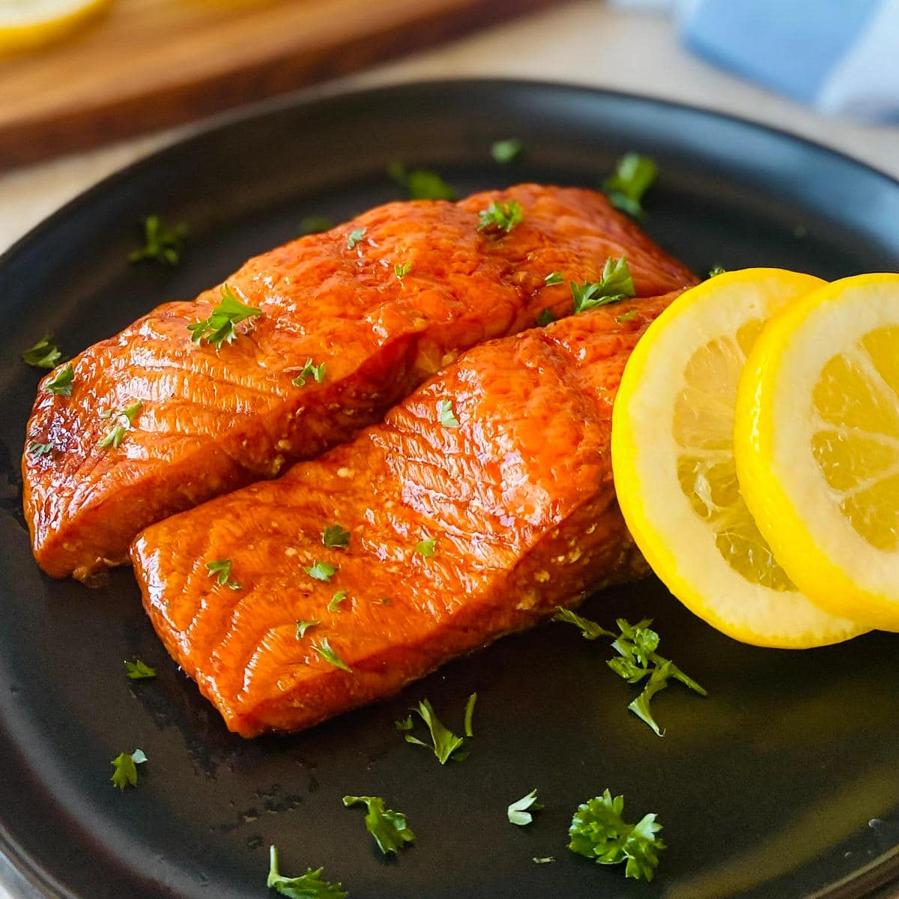

Smoked Salmon

Description:
Smoked Salmon brings a unique flavor of smokeiness and saltiness.
Packed with healthy fats high quality protein, this is a great healthy food that will stasify anyones seafood cravings.
Ingredients:
- (2) Boneless center-cut salmon fillets (Roughly 8 oz)
- salt and pepper
- 3 tablespoons of melted butter
- 2 tablespoons of chopped dill
- 1 and 1/2 cups of cooked mashed potatos (optional)
- 2 tablespoons of thinly sliced green onions (optional)
Directions:
- Season top of salmon fillets with salt, pepper, and some cayenne.
- Spread 1/2 melted butter over the surface of the fillet.
- Sprinkle chopped dill and place prepped fish in the fridge until needed.
- Preheat oven to 400 degrees F. (200C)
- Spread mashed potatos into 2 baking dishes.
- Set salmon fillets on top of the mashed potatos.
- Roast salmon in preheated oven until internal temperature in the center (thickest part of the fillet) reads to 140F(60C), usually 20 minutes.
- Once roasted, brush remaining better over top of salmon and garnish with green onions
- Enjoy!
Back to top
Back to Homepage